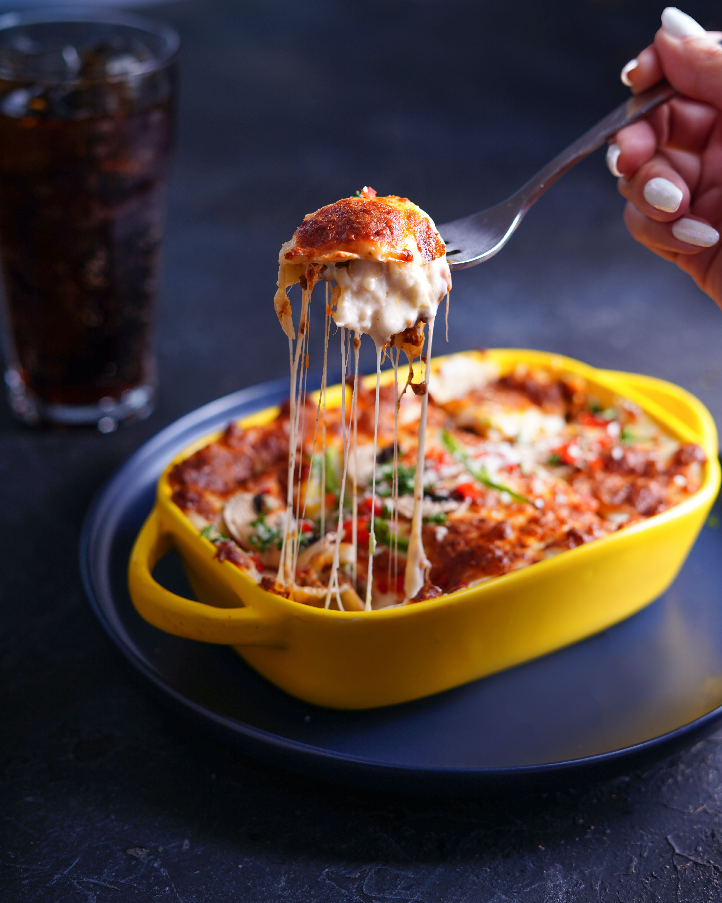

Home
Lasagna

Ingredients
500g noodles
250g tomato sauce
cheese
Steps
Cook the noodles as stated on the packaging
Afterwards put it in the oven together with the sauce and the cheese
Let it cook for another 20-25min on 150°C
Enjoy your meal!